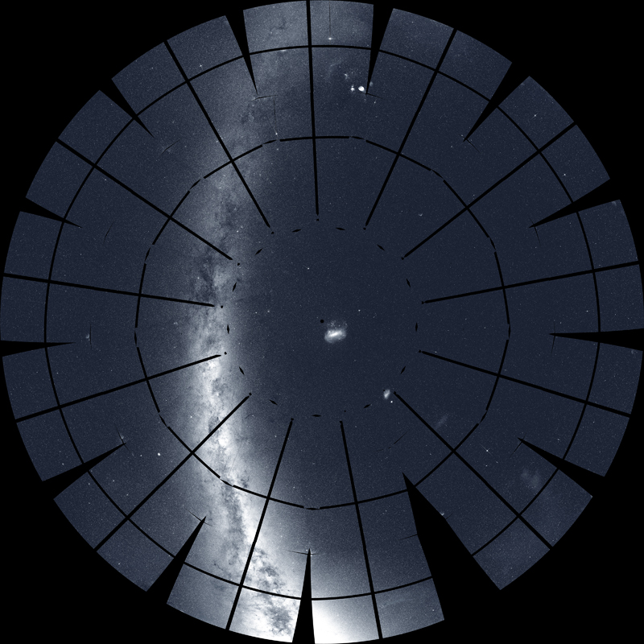

Time flies -- it has already been two years since TESS launched into space! Since launching on April 18, 2018, TESS has mapped out a significant fraction of the night sky, confirmed the existence of 45 exoplanets, found more than 1700 planet candidates, and been used to examine the variability of countless sources such as active galactic nuclei and supernovae.
Before science operations even began in July 2018, TESS managed to capture a set of images showing the motion of the comet C/2018N1, illustrating TESS's unique ability to collect a set of stable periodic images covering a wide region of the sky.
Within the first few months of operation, TESS demonstrated its planet hunting abilities by detecting its first three exoplanets: a planet named Pi Mensae c, which is twice the size of the Earth and orbits its Sun like star every six days; LHS 3844 b, a rocky planet located in the constellation Indus, at a distance of only 49 light years; a dense non-rocky planet named HD 21749 b, which is three times the size of the Earth and 23 times more massive, making the planet more dense than Neptune.
TESS discovered its first Earth-size planet in the habitable zone, which was announced in early 2020. The planet named TOI 700 d orbits a cool M dwarf star approximately 40% the mass and size of the Sun and is just over 100 light years away in the southern constellation of Draco. To date TOI 700 d is one of only a few planets discovered within a system’s habitable zone.
TESS also detected its first circumbinary planetary system in 2019. The planet, TOI 1338 b, is a world that orbits two stars in the constellation of Pictor, at a distance of 1300 light years. The two stars orbit each other every 15 days - one is 10% more massive than the Sun whilst the other is cooler and dimmer at 1/3 the size of the Sun. TOI 1338 b is believed to be the only planet in the system and is almost 7 times larger than the Earth.
Apart from hunting for planets, TESS, with its almost all-sky survey capability and high-cadenced observations, is a great tool to study the variable universe. TESS watched a star being torn apart by a black hole in a phenomenon known as a tidal disruption event (TDE). This event was named ASASSN-19bt as it was first identified by the ground-based All-Sky Automated Survey for Supernovae. The data provided by TESS allowed the astronomical community to view the light from the event much closer to the black hole than ever before!
TESS has also been used to create detailed high-cadenced light curves of supernovae (SNe). Recent work presented 18 early time light curves of Type Ia SNe occurring in the first six sectors of TESS data. SN Ia are one of our most mature cosmological probes, however we still do not have a firm understanding of the progenitor systems. The detailed early time observations of these transient events by TESS are extremely important and can provide vital information in understanding these systems.
The science highlighted here represents only a small amount of the incredible science to have come out of the TESS prime mission to date, thanks to efforts of both the TESS mission team and the TESS community. So what is next for TESS? The two-year prime mission will end in July 2020, and given the success of TESS, the mission has now been extended for a further two years through October 2022. TESS will remain as NASA's key planet hunter, but it will also continue to provide the high-quality wide-field survey data required for the exploration of many different kinds of variable and transient events in the night sky -- part of which is shown below in the mosaic of the southern sky as seen by TESS.
